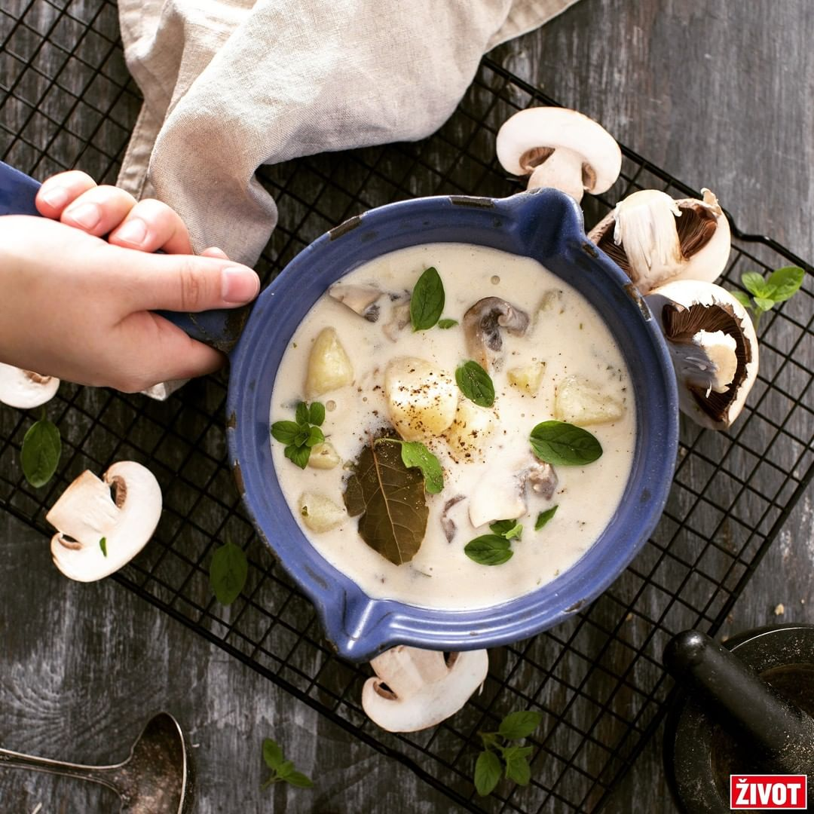

Hubová polievka podľa @tyzdennikzivot — Normy Jedál
Túto jednoduchú HUBOVÚ POLIEVKU so zemiakmi sa obľúbite! 🥣🥔
POTREBUJEME:
👉2 hrste sušených húb podľa chuti
👉bobkový list
👉zemiaky
👉soľ
👉1 cibuľa
👉2 lyžice hladkej múky
👉olej
👉mlieko
👉ocot
POSTUP:
Umyté huby zalejeme litrom vody, pridáme bobkový list a približne hodinu povaríme. Potom pridáme očistené nakrájané zemiaky a osolíme. Z cibule, múky a oleja pripravíme svetlú zápražku, ktorú zalejeme mliekom podľa potreby a pridáme do polievky. Ešte krátko povaríme a podľa chuti dochutíme octom.
DOBRÚ CHUŤ PRAJEME🤤
Viac skvelých receptov nájdete na našom webe 😊
📸: DUŠAN KŘÍSTEK
#hubovapolievka #polievky #soupoftheday #soup #recipes #food #lunchtime #varimeslaskou #dnesvarim #kitchen #chef #varime #zivot #tyzdennikzivot #newsandmediaholding #receptyzozivota ❤️